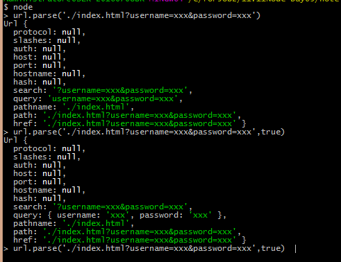

1.项目需求分析 项目初始化
把前端用到的静态资源（访问页面需要加载的资源，如css，img，script）放到 public 目录下
把所有的页面都放到 views 目录下
在项目根路径下创建一个 app.js 作为后台的启动入口
使用 npm 安装和管理项目的依赖项
将所有的相册放到项目根路径下的 uploads 目录下
划分哪些资源公共开放 用户可以随便访问；定义pathname.startsWith(‘/public/‘)可以对该目录下的请求资源统一处理
public
uploads
node_modules
设计路由（router，不同的请求，分别执行handler.js暴露出的不同接口）
请求方法
请求路径
响应处理
GET
/
views/index.html
GET
/album
views/album.html
GET
/album/add
处理添加相册请求
POST
/upload
处理照片上传请求
2.重点代码片段 1.关于公开资源引用的链接 1
2
3
4
5
6
7
8
9
10
11
12
13
14
15
16
17
18
<link rel="stylesheet" href="node_modules/bootstrap/dist/css/bootstrap.css">
<link rel="stylesheet" href="public/css/main.css">
<img src="public/img/icon.png" alt="">
对应处理的代码部分：
exports.showCommon = function(req,res){
fs.readFile(`.${req.url}`, (err,data)=> {
if(err){
res.writeHead(404,'Not Found')
res.end()
}
res.writeHead(200, {
'Content-Type':mime.lookup(req.url)
})
res.end(data)
})
}
加载资源时，向服务器发送的请求地址会变成http://196.168.32.51:3000/node_modules/bootstrap/dist/css/bootstrap.css，所以读取文件路径时是``.${req.url}``,即`.\public\css\main.css`,是相对于当前js文件而言（这里是handler.js）
2.underscore模板引擎的使用 Node.js部分：
1
2
3
4
5
6
7
8
9
10
11
12
13
14
15
16
17
18
19
20
fs.readFile('./view/index.html', (err,data)=> {
if(err){
res.writeHead(404,'Not Found')
res.end()
}
res.writeHead(200, {
'Content-Type':'text/html;charset=utf-8'
})
fs.readdir('./uploads',(err,files) => {
if(err){
throw err
}
const result=_.template(data.toString())({
albumname:files
})
res.end(result)
})
})
对应的html部分1
2
3
4
5
6
7
8
9
10
<% albumname.forEach(a => { %>
<div class="col-xs-6 col-md-3">
<a href="#" class="thumbnail">
<img src="public/img/icon.png" alt="">
</a>
<div class="caption">
<h3><%=a%></h3>
</div>
</div>
<% }) %>
随笔 1.node模块url1
2
3
4
5
6
7
// 该方法，会将一个完整的 url 路径解析为一个对象，方便我们取各个部分的数据
// 指定第二个参数，parse 方法的query属性会将查询字符串解析为一个对象挂载给返回结果的 query 属性
const url = require('url')
const urlObj = url.parse('./index.html?username=xxx&password=xxx', true)
const pathname = urlObj.pathname // 拿到请求路径，不包含查询字符串(?后面的内容)
const queryObj = urlObj.query // 拿到通过 url.parse 方法解析出来的查询字符串（已经自动转为对象了）
有无第二个参数（true）的执行结果：

2.操作文件的路径
1. 如果是以 / 开头的路径，则就是去执行当前脚本所属的磁盘根路径去找
2. 如果是以 C:/dev/nvm/settings.txt ，则直接去找该绝对路径
3. 如果是以 ./ 或者 ../ 开头的，则是相对于执行 node 命令的时候所处的路径
所以说，如果是操作相对路径的文件，最好把相对路径转为绝对路径
但是绝对路径又不能写死
可以使用每一个文件模块中都提供了两个属性：__dirname 和 __filename
__dirname 用来获取当前文件模块所属目录的绝对路径
__filename 用来获取当前文件的绝对路径，这个属性用的比较少
1
2
console.log(__dirname) // => C:\Users\iroc\Desktop\code
console.log(__filename) // => C:\Users\iroc\Desktop\code\02_文件路径.js
fs.readFile(path.join(__dirname, ‘README.md’), ‘utf8’, (err, data) => {
// console.log(path.join(__dirname, ‘README.md’))
3.关于mime
https://www.npmjs.com/package/mime
mime.lookup(path)方法可以辅助设置”Content-Type:”1
2
3
4
5
6
var mime = require('mime');
mime.lookup('/path/to/file.txt'); // => 'text/plain'
mime.lookup('file.txt'); // => 'text/plain'
mime.lookup('.TXT'); // => 'text/plain'
mime.lookup('htm'); // => 'text/html'
4.关于nodemon
https://www.npmjs.com/package/nodemon 1
$ nodemon ./server.js localhost 8080